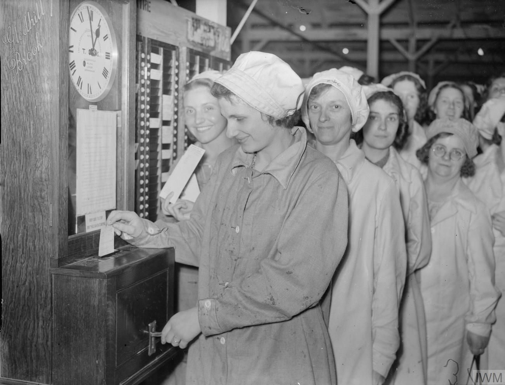
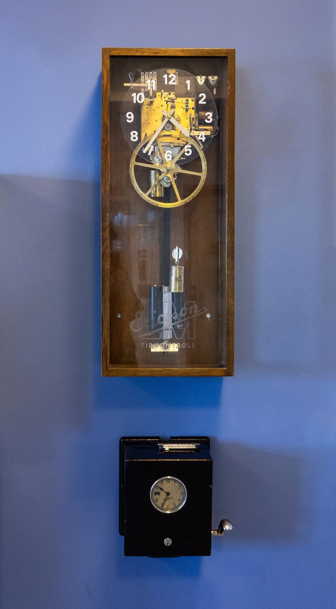
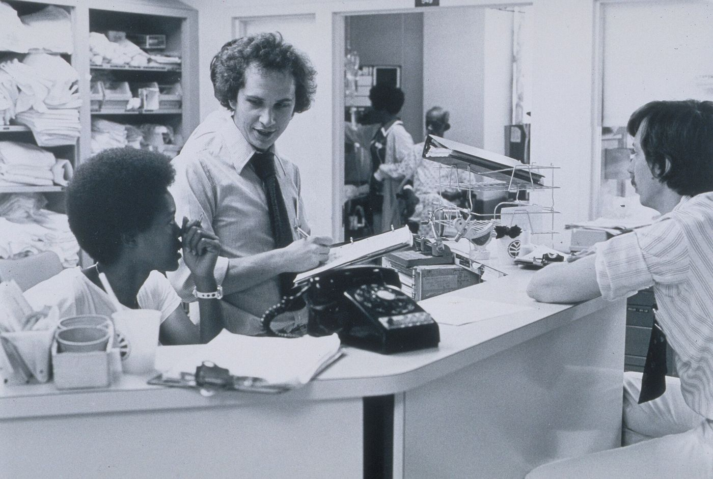

One place for
the whole workday
Workzenly runs hiring, shifts, time, leave and pay for employers, and gives every employee one app for all of it.
Switch sides on the card to see what each person gets.
Good morning, Priya
Wednesday 29 October
Front desk · Northfield Café, Banjara Hills
09:02:14
Today’s shift 09:00–17:30
Not clocked in yet
- Leave left 14.5 of 24 days
- Next payslip ₹48,260 Fri 31 Oct
- Next shift Thu 07:00 to 15:30
Today at Northfield Café
6 of 8 people on shift
| Name | Role | In | Status |
|---|---|---|---|
| Priya Raman | Front desk | 08:58 | On shift |
| Arjun Mehta | Barista | 07:01 | On shift |
| Sara Khan | Kitchen | 09:14 | Late 14 min |
| Daniel Joseph | Barista | – | On leave |
Waiting for you
3 timesheets and 1 leave request
Built for both sides of the job
Most companies run work on a payroll tool, a rota spreadsheet, a leave email chain and a group chat. Workzenly puts it in one place, so the person who hires and the person who works see the same facts.
For employers. Post a job, hire, onboard, build the rota, approve hours and run payroll from one account. Every number on a payslip traces back to a shift someone actually worked.
For employees. Clock in from your phone, swap a shift, ask for leave, read your payslip and find the policy you need without asking anyone where it is.
For managers. See who is in today, who is late and who is on leave. Approve a whole week of timesheets in one tap, and get told before a shift goes uncovered.
For HR and payroll. Contracts, documents, reviews and pay history live in each person’s record, so month end is a check and not a hunt through inboxes.
Everything a workplace needs
Type to find a part of Workzenly, or move through the list.
- HiringH Post a role, collect applications in one list, schedule interviews and send the offer letter from the same screen.
- OnboardingO New starters sign their contract, add bank details and read the handbook before day one, on their own phone.
- Shifts and rotasR Build next week’s rota by dragging people into slots. Staff see it instantly and can offer or swap a shift.
- Time and attendanceT Clock in by phone or a shared tablet at the door. Breaks, overtime and lateness are worked out for you.
- Leave and holidaysL Ask for a day off in two taps. Managers see who else is away before they say yes, and balances update themselves.
- Payroll and payslipsP Approved hours, leave and expenses flow into the pay run. Everyone gets their payslip in the app the same day.
- ExpensesE Photograph the receipt, pick a category, send. Approved claims are paid with the next salary.
- Reviews and goalsG Set goals together, keep notes from one-to-ones, and run a review cycle without a single spreadsheet.
- Documents and policiesD Contracts, ID checks, certificates and the staff handbook, stored against each person and searchable.
Nothing by that name yet. Ask us, it may be on the way.
How a day off works
Asha asks for Friday off.
From her phone, on the bus. She can see she has 9 days left before she sends it.
Then her manager says yes.
Ravi sees that two others are already off on Friday, finds cover from the rota, and approves it.
Payroll knows without an email.
The day comes off her balance and lands in October’s pay run as paid leave. Nobody types it twice.

Clocking on, since 1940
For most of the last century a shift began with a card pushed into a clock by the door. Someone in an office then copied every card into a ledger, worked out the pay and posted the slips.
The clock moved to the phone, but in most workplaces the copying never stopped. Workzenly is the clock, the ledger and the office in one place, so the time you clock in is the time you are paid for.

Built for every kind of shift

And offices.
Hybrid days, holiday calendars and reviews for teams who never clock in at all. Same app, same record, fewer tools.
Questions
Who is Workzenly for?
Any business with people on a payroll, from a single café to a company with several sites. The employer gets the admin tools and every employee gets their own app.
Does every employee need a login?
Each person gets their own account for payslips, leave and shifts. For sites where phones are not allowed on the floor, a shared tablet at the door handles clocking in.
Can it run our payroll?
Yes. Approved hours, leave and expenses go straight into the pay run, and payslips are published to each employee’s app when you finish it.
Does it work on a phone?
The employee side is built for phones first. Managers can approve, build rotas and check who is in from a phone too; payroll is easiest on a laptop.
We already use spreadsheets. Can we move our data?
Send us your staff list and leave balances as a spreadsheet and we will import them during setup, so nobody starts from zero.
How long does setup take?
Most small teams are clocking in within a week. We walk you through it on the demo call and stay with you for the first pay run.
Who can see salaries and personal details?
You decide. Employees see only their own record, managers see their team’s shifts and leave, and pay is visible only to the people you give payroll access to.
Start with
your team
Tell us who you are and we will set up a demo workspace with your company name before the call.